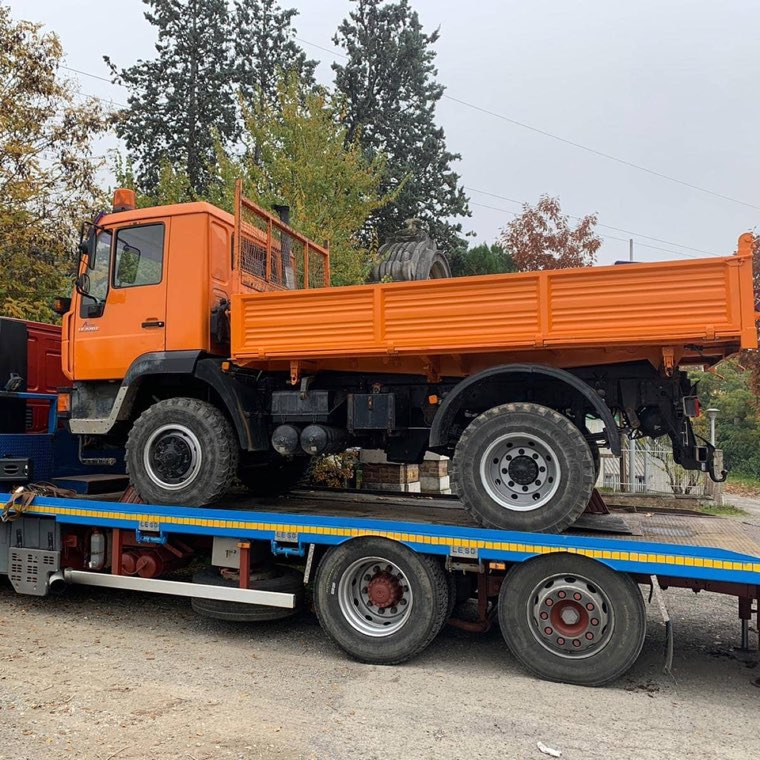

È la differenza fra un'impresa e un intermediario: possiamo garantire tempi e qualità perché non dipendiamo da nessuno.
Abbiamo mezzi di taglia diversa proprio per poter lavorare sia sui grandi piazzali sia dove lo spazio è ridotto: dentro un capannone, su un versante boscato, dentro un alveo. Sotto l'elenco dei mezzi principali.
numero e portate
Scavi, demolizioni e lavori in pendenza.
numero e portate
Spazi ristretti, alvei e lavorazioni di precisione.
numero e portate
Movimentazione e carico materiali.
numero e portate
Trasporto materiali e materiali di risulta.
modelli
Stesa e compattazione degli asfalti.
martelloni, pinze, benne, vaglio…
Attrezzature intercambiabili per ogni lavorazione.
Tutti i mezzi sono sottoposti a manutenzione e verifiche periodiche secondo le normative vigenti.





Ce lo chieda: se non ce l'abbiamo glielo diciamo, invece di farle perdere tempo.